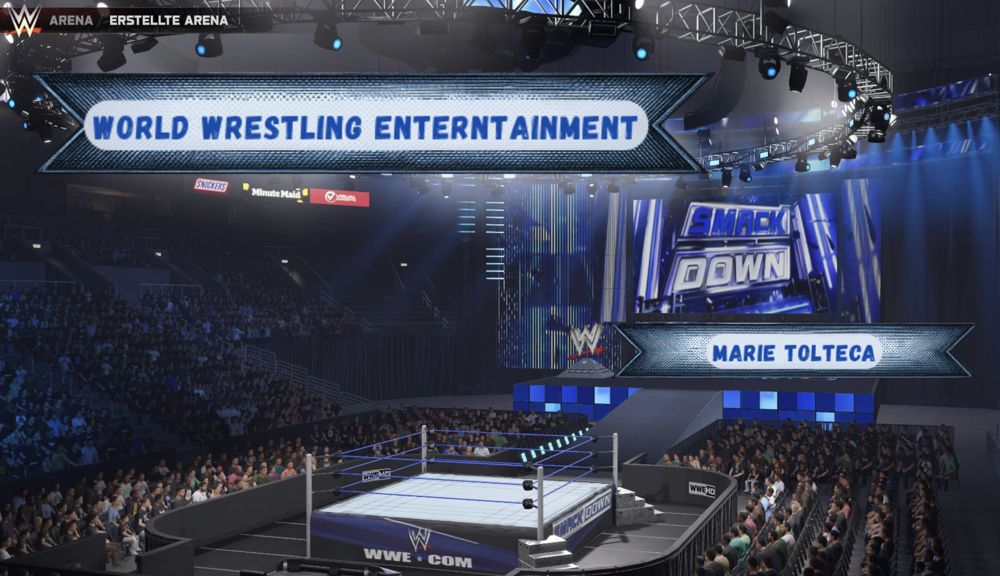
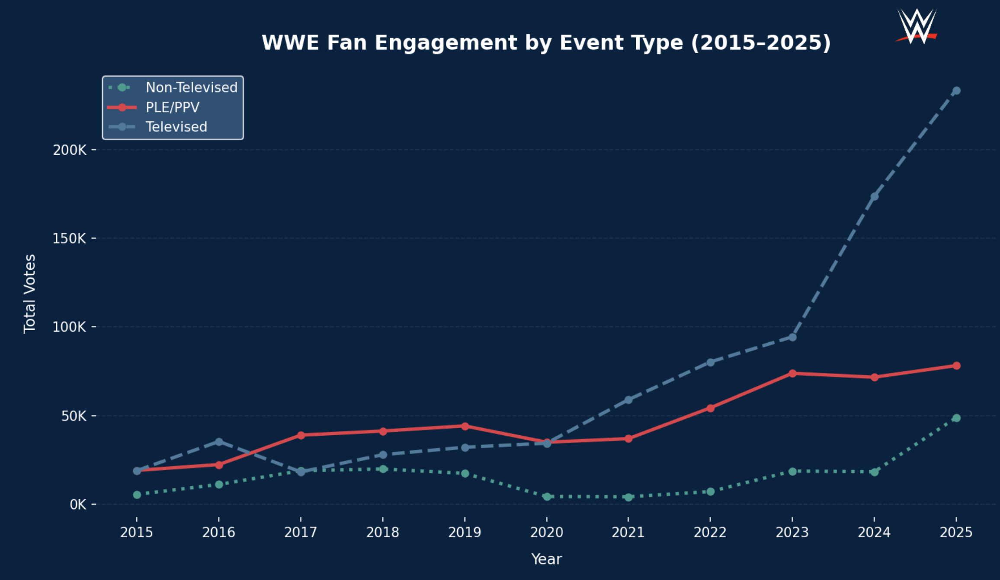
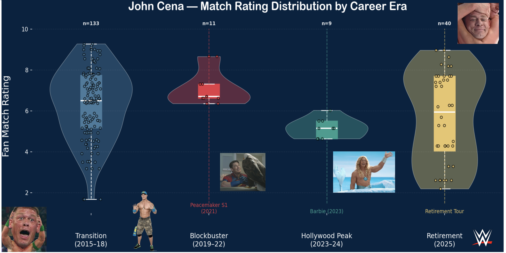

WWE Events & Match Ratings Database (2015–2025)

A structured SQL database built from real WWE event and match rating data sourced from Cagematch.net and the Wrestling Observer Newsletter (WON).
This project demonstrates end-to-end data engineering and analytics skills from schema design and data ingestion to SQL querying and Python visualization.
Table of Contents
- Project Overview
- Dataset
- Schema Design
- Data Cleaning
- Analysis Questions
- Visualizations
- Tech Stack
- How to Run
- Limitations & Future Work
Project Overview
This project was built over 7 weeks as part of a database design course. The goal was to:
- Choose a real-world dataset
- Design a relational schema
- Clean and ingest data into a SQL database
- Write analytical SQL queries
- Visualize results in Python
- Document and present findings
The dataset covers 10 years of WWE programming (2015–2025), including televised shows, non-televised live events, and premium live events (PLEs/PPVs).
Dataset
Source: Kaggle — WWE Events & Match Ratings (2015–2025)
| File | Rows | Description |
|------|------|-------------|
| `wwe_events.csv` | 5,970 | Event-level data (show name, type, location) |
| `wwe_match_rating.csv` | 8,101 | Match-level data with fan and critic ratings |Rating Sources: - CageMatch Rating — crowdsourced fan ratings from cagematch.net (6,235 matches rated) - WON Star Rating — critic ratings from Dave Meltzer’s Wrestling Observer Newsletter (2,171 matches rated)
Event Types:
| Type | Count |
|------|-------|
| Televised | 3,261 |
| Non-Televised | 2,421 |
| PLE/PPV | 288 |Table Definitions
wwe_events — Event-level fact table
| Column | Type | Key |
|--------|------|-----|
| Date | DATE | PK |
| Promotion | TEXT | PK |
| Event | TEXT | |
| EventName | TEXT | |
| EventType | TEXT | |
| CityTown | TEXT | |
| StateProvince | TEXT | |
| Country | TEXT | |
wwe_match_rating — Match-level fact table
| Column | Type | Key |
|--------|------|-----|
| Index | INTEGER | PK |
| Date | DATE | FK → wwe_events |
| Promotion | TEXT | FK → wwe_events |
| Match | TEXT | |
| CageMatchRating | DECIMAL | |
| CageMatchRatingVotes | INTEGER | |
| WONStarRating | DECIMAL | |
| Opponent1 | TEXT | |
| Opponent2 | TEXT | |
tag_teams — Unpivoted tag team opponents
| Column | Type | Key |
|--------|------|-----|
| OpponentID | INTEGER | PK |
| MatchIndex | INTEGER | FK → wwe_match_rating |
| Team | TEXT | |
superstars — Unique superstar lookup table
| Column | Type | Key |
|--------|------|-----|
| SuperstarID | INTEGER | PK |
| SuperstarName | TEXT | |Data Cleaning
Cleaning was performed in R using the tidyverse package.
Steps taken:
- Dates were already in
YYYY-MM-DDformat and loaded as proper date types, no reformatting needed - Numeric columns (
CageMatchRating,WONStarRating,CageMatchRatingVotes) contained no text or mixed values - Missing ratings represented as
NA(expected: not every match is rated by both sources) - Trailing commas removed from opponent strings (e.g.
"Raquel Rodriguez, Stephanie Vaquer,") - Tag teams extracted by detecting
&in opponent columns and pivoting to long format - 515 duplicates looking rows in
wwe_eventsare legitimate. WWE runs multiple house shows in different cities under the same event name on the same date
Known limitation: 81 match dates in wwe_match_rating have no corresponding row in wwe_events. These matches are excluded from any query that joins both tables.
Tag Teams Table (R Code)
library(dplyr)
library(tidyr)
library(stringr)
tag_teams <- match_rating %>%
select(Index, Opponent.1, Opponent.2) %>%
pivot_longer(
cols = c(Opponent.1, Opponent.2),
names_to = "Side",
values_to = "Team"
) %>%
mutate(Team = str_trim(str_replace_all(Team, ",\\s*$", ""))) %>%
filter(str_detect(Team, "&")) %>%
select(MatchIndex = Index, Team) %>%
mutate(OpponentID = row_number()) %>%
select(OpponentID, MatchIndex, Team)Analysis Questions
Q1 — How has fan engagement varied across WWE event types from 2015 to 2025?
SELECT
YEAR(m.Date) AS Year,
e.EventType,
SUM(m.CageMatchRatingVotes) AS TotalVotes
FROM match_rating m
JOIN events e ON e.Date = m.Date AND e.Promotion = m.Promotion
GROUP BY Year, e.EventType
ORDER BY Year ASC, TotalVotes DESC;
Q2 — Who are the top 20 highest rated WrestleMania superstars (2015–2025)?
SELECT s.SuperstarName,
ROUND(AVG(m.CageMatchRating), 2) AS AvgRating,
COUNT(*) AS MatchCount
FROM superstars s
JOIN wwe_match_rating m ON s.MatchIndex = m.Index
JOIN wwe_events e ON e.Date = m.Date AND e.Promotion = m.Promotion
WHERE e.Event = 'WWE WrestleMania'
GROUP BY s.SuperstarName
ORDER BY AvgRating DESC
LIMIT 20;Q3 — How did John Cena’s performance vary across career eras?

Tech Stack
| Tool | Purpose |
|---|---|
| R / tidyverse | Data cleaning and ingestion |
| SQLite | Relational database |
| Python / pandas | Data manipulation |
| Python / matplotlib | Visualization |
| Kaggle | Data source |